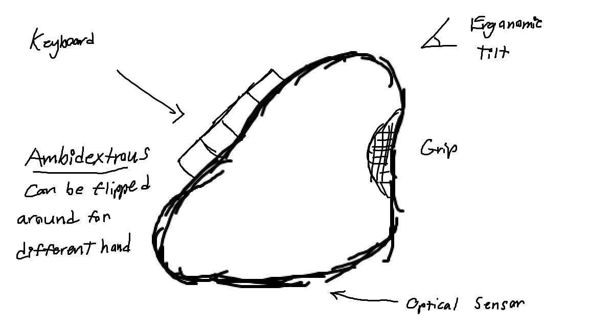
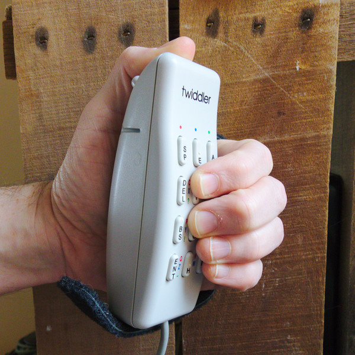
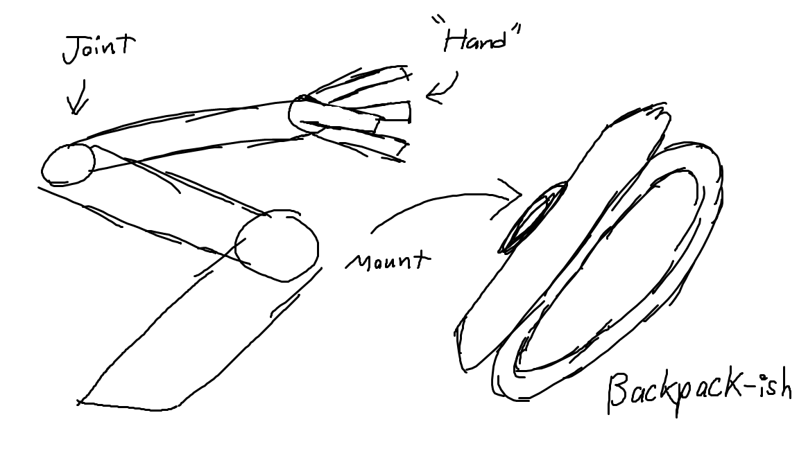
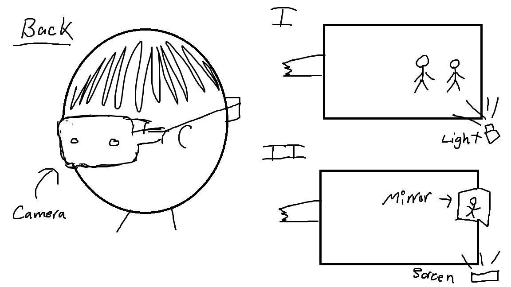
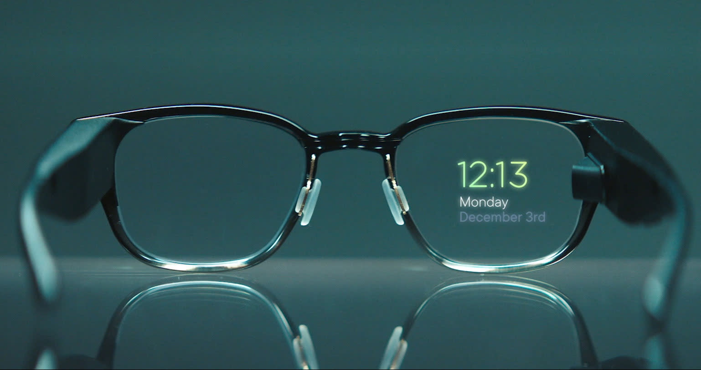

I: One-Handed Keyboard/MouseThinking mainly of those without a working arm or hand, or simply without one, I realized that typing on a traditional keyboard could prove challenging. Furthermore, they could not effectively control both the mouse and the keyboard at the same time, something that is necessary in computer gaming. As a result, I want to develop a device that serves as a 2-in-1 combo: a mouse with a keyboard on it. A few devices already exist that serve this purpose such as the Twiddler; however, many of these designs stray from the traditional movement of a mouse. My current idea is to implement a one-handed chorded keyboard layout, most likely the ARTSEY layout, onto a tilted mouse frame. |
 |  |
|  |
II: Doc Ock ArmsWhile more of a fun project, it can still be said that having Doctor Octavius's mechanical arms could prove useful. Besides the obvious inspiration of Doc Ock, Hacksmith Industries also inspired me as they tried this idea before. However, I felt there were quite a few things they could have improved and their work felt rushed. My idea, in order to scale down, is to develop one controllable robotic limb that attaches to the back. It would only have three joints in order to avoid overheating/overvolting problems, as well as to make it simpler. It would have a hand at the end with four fingers, similar in shape and form to Doc Ock's mechanical arms. These fingers could be moved either through pneumatics, hydraulics (if I want to be risky), or servo motors. The part that attaches to the user requires particular attention in order to ensure that it fits comfortably and in a manner that does not significantly impact posture. The current issue that I have with this idea is how to control the arm. Using the brain requires technology that I don't have access to nor want to mess with, and using another arm makes it redundant. |
III: "Eyes at the Back of Your Head" GlassesI like sharks. Fun fact about hammerhead sharks: they have almost 360 vision, which means they can see both forward and back. My idea here is to integrate a camera into a pair of glasses that would allow the user to see behind them. The camera would be placed behind the head in a form similar to the Oculus Pro headstrap. A light would then shine into the lens of the glasses which then reflects into the user's eye. Alternatively, a small LED screen and a tiny mirror could be used if the former contraption is too complex. I currently want to make it so that the rearview only turns on when motion is detected. This would recquire some tuning work as I do not want it to go off simply by the user turning their head, jumping, etc. Alternatively, I could include distance sensors so that instead of being triggered by motion, the camera is triggered by approaching objects - I got this idea from car sensors. |
 |  |